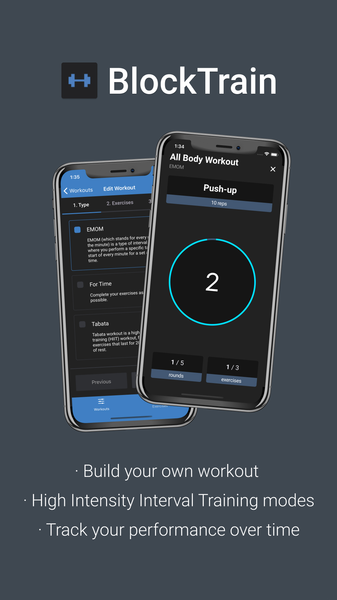

About Me
Hello! I'm a passionate software developer from the city of Sarajevo,
BiH. I spent the first part of my career working for awesome companies
(see below) where I've learned a lot (big tnx to those companies <3).
Currently I'm spending my time building out products on my own, from the very idea to design, code and infrastructure.
Tools of choice: TypeScript, Node.js, React, React Native, AWS
Currently I'm spending my time building out products on my own, from the very idea to design, code and infrastructure.
Tools of choice: TypeScript, Node.js, React, React Native, AWS
Latest Projects

BlockTrain
BlockTrain lets you to build your own workout composed of existing
exercises or ones you can create. When built you can enter guided
workout mode, with a timer and workout details such as round
number, current exercise name, etc.
- Download on App Store
- Download on Play Store
- Download on App Store
- Download on Play Store
Latest Roles
Full Stack Developer @ UBDI
April 2019 - May 2020
I joined the UBDI team from the very beginning, where in a small
team we built the whole platform from scratch using TypeScript,
Node.js, GraphQL, React, React Native. During my time at UBDI I also
gained more infrastructure knowledge, specifically AWS ECS, thanks
to my colleagues.
Skills: React, React Native, Node.js, Typescript, Docker
Skills: React, React Native, Node.js, Typescript, Docker
Front End Developer / Team Lead @ Toptal
May 2017 - April 2019
At Toptal, I've worked in many different areas of the company. I've
spent most of my time working on the main product: The Toptal
Platform, introducing new features and maintaing current ones both
for staff and clients.
As a Team Lead I've spent my time leading the public pages team, where I've gained both technical and people leadership skills.
Skills: React, Apollo, Backbone, Ruby on Rails, Leadership
As a Team Lead I've spent my time leading the public pages team, where I've gained both technical and people leadership skills.
Skills: React, Apollo, Backbone, Ruby on Rails, Leadership
iOS / Front End Developer @ Personal
Feb 2016 - May 2017
At Personal I was in charge of rewriting the Personal Cloud app,
that let you store your personal data, fully encrypted.
Once Personal was acquired by Digi.me, I transitioned into a role of a Front End developer working on their React Electron app.
Skills: Swift, React, Electron
Once Personal was acquired by Digi.me, I transitioned into a role of a Front End developer working on their React Electron app.
Skills: Swift, React, Electron
Full Stack Developer @ Intersoft
Nov 2012 - Feb 2016
At Intersoft I worked on their two most important projects:
Klix.ba
Klix.ba is the most popular media in Bosnia & Herzegovina, and I was involved in every step of building it. From database (MySQL), backend (PHP) and frontend (HTML/CSS/JS). As part of the project we built a powerful in-house CMS which is used by the writers team.
Market.ba
We built the (at-the-time) state of art platform for selling and buying items, with a bit of social network features. We used PHP, MySQL and Elasticsearch.
Skills: HTML/CSS, JavaScript, jQuery, PHP, MySQL, Elasticsearch
Klix.ba
Klix.ba is the most popular media in Bosnia & Herzegovina, and I was involved in every step of building it. From database (MySQL), backend (PHP) and frontend (HTML/CSS/JS). As part of the project we built a powerful in-house CMS which is used by the writers team.
Market.ba
We built the (at-the-time) state of art platform for selling and buying items, with a bit of social network features. We used PHP, MySQL and Elasticsearch.
Skills: HTML/CSS, JavaScript, jQuery, PHP, MySQL, Elasticsearch